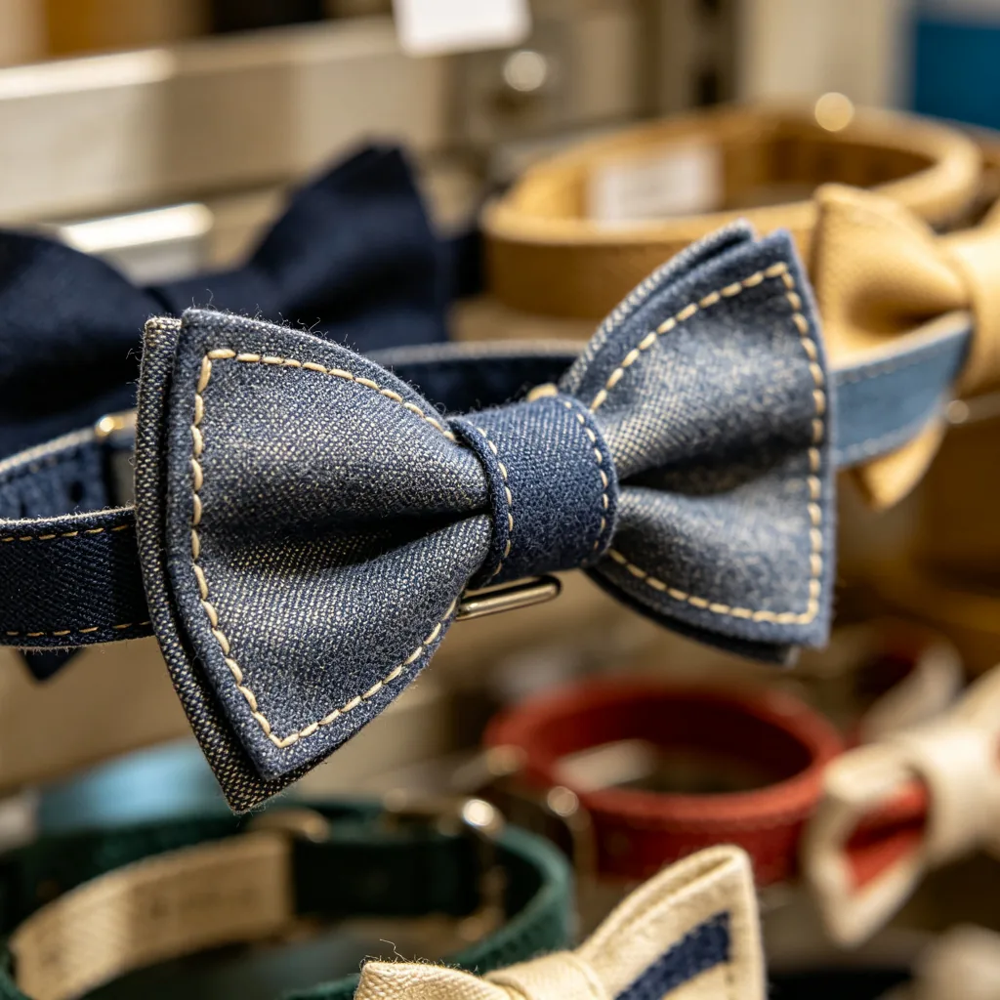

在一間溫馨的貓咪咖啡廳裡，木質的吧檯上擺著一杯剛出爐的拿鐵，奶泡上畫著一個可愛的貓咪圖案。一隻英國短毛貓安靜地坐在吧檯旁邊，用一雙圓滾滾的眼睛看著你，彷彿在說：「歡迎光臨，要來一杯貓咪拿鐵嗎？」空氣中彌漫著咖啡的香氣和貓咪毛髮的溫暖氣息，背景是輕柔的爵士樂和貓咪偶爾的叫聲。這個場景，或許就是都市人心中最治愈的畫面。
貓咪咖啡廳的興起
世界上第一家貓咪咖啡廳「Cat Flower Garden」於1998年在台灣台北開業，此後貓咪咖啡廳的概念迅速傳播到日本、韓國、歐洲和北美，成為了一種全球性的流行文化。到2025年，全球已有超過數千家貓咪咖啡廳，每年吸引數百萬人次的遊客。
貓咪咖啡廳為什麼這麼受歡迎？原因是多方面的：首先，現代都市人的生活節奏快、壓力大，很多人因為工作繁忙、居住空間有限或租房限制而無法飼養寵物。貓咪咖啡廳為這些人提供了一個可以與貓咪互動、獲得治愈的場所，而不需要承擔長期飼養的責任和費用。其次，科學研究證實，與貓咪互動可以顯著降低壓力荷爾蒙（皮質醇）的水平，提升「快樂荷爾蒙」（催产素和血清素）的分泌，從而減少焦慮和抑鬱，提升情緒。在一個溫馨的咖啡廳裡，一邊喝著咖啡，一邊被可愛的貓咪圍繞，對很多人來說就是最好的減壓方式。

貓咪咖啡廳的治愈魔法
貓咪咖啡廳的治愈效果來自多種因素的結合：
貓咪的存在：這是最核心的因素。貓咪的毛髮柔軟、體溫溫暖、叫聲輕柔，與貓咪互動（撫摸、擁抱、玩耍）可以觸發人體的催产素分泌，帶來放鬆和愉悅的感覺。此外，貓咪的存在本身就有一種「療癒」的力量——看著貓咪安靜地睡覺、優雅地走動、認真地玩耍，可以讓人忘記煩惱，專注於當下的美好。

咖啡的香氣和溫暖：咖啡本身就有提神和放鬆的效果。咖啡的香氣可以刺激大腦的獎勵系統，帶來愉悅感；而一杯溫熱的咖啡握在手裡，也可以帶來身體上的溫暖和心理上的安慰。咖啡和貓咪的結合，就像是「雙重治愈」——味覺和嗅覺的享受加上情感和心理的慰藉。
溫馨的環境：貓咪咖啡廳通常都有著溫馨、舒適的裝修風格——柔和的燈光、舒適的沙發、木質的傢俱、可愛的裝飾品。這樣的環境可以讓人感到放鬆和安心，遠離都市的喧囂和壓力。
社交的愉悅：貓咪咖啡廳也是一個獨特的社交場所。在這裡，人們可以因為對貓咪的共同愛好而自然地展開對話，減少了社交的壓力和尷尬。很多人在貓咪咖啡廳認識了新朋友，甚至找到了另一半。
貓咪咖啡廳的動物福利
雖然貓咪咖啡廳為人類帶來了很多快樂，但也引發了一些關於動物福利的討論。負責任的貓咪咖啡廳應該做到以下幾點：
- 提供足夠的休息空間：貓咪需要安靜的休息空間，遠離人群的騷擾。咖啡廳應該設有貓咪可以自由進出的「貓咪專屬區」，讓貓咪在需要時可以遠離遊客，安靜休息。
- 控制遊客數量和互動時間：過多的遊客和過度的互動會讓貓咪感到壓力和疲勞。咖啡廳應該控制同時在場的遊客數量，設定合理的營業時間，並給貓咪足夠的休息時間。
- 專業的照護：咖啡廳應該有專業的工作人員來照顧貓咪，確保貓咪的飲食、健康、行為和心理需求都得到滿足。工作人員也應該引導遊客正確地與貓咪互動，避免不當的觸摸或驚嚇。
- 推廣領養代替購買：很多負責任的貓咪咖啡廳會與動物保護組織合作，舉辦領養活動，為流浪貓咪找到永遠的家。這種模式不僅可以幫助更多的貓咪，也可以教育公眾關於動物保護的理念。
如何選擇一家好的貓咪咖啡廳？
1. 觀察貓咪的狀態：貓咪是否看起來健康、快樂、放鬆？是否有足夠的休息空間？2. 注意環境衞生：咖啡廳是否乾淨、整潔？是否有異味？3. 了解貓咪的來源和照護方式：可以詢問工作人員貓咪的來源、日常照護、健康檢查等信息。4. 查看評價：在網上查看其他顧客的評價，了解咖啡廳的口碑。5. 支持有社會責任的咖啡廳：優先選擇與動物保護組織合作、推廣領養代替購買的咖啡廳。
拿鐵咖啡廳的英短，用牠的溫柔和從容，為我們描繪了一個理想中的貓咪咖啡廳的樣子。在這裡，人類和貓咪可以和諧共處，互相治愈。希望越來越多的貓咪咖啡廳能夠在營利的同時，真正關心貓咪的福利，讓每一隻在咖啡廳工作的「店長」都能健康、快樂地生活。